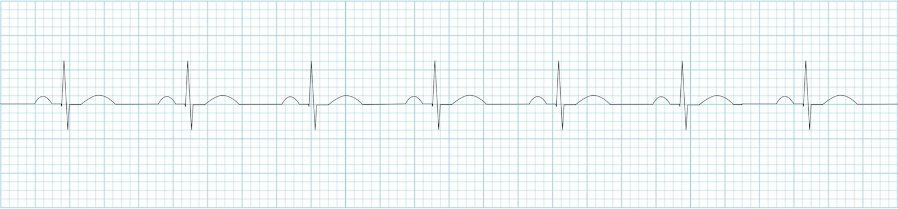
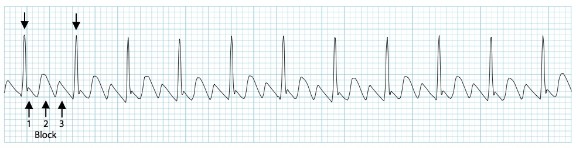
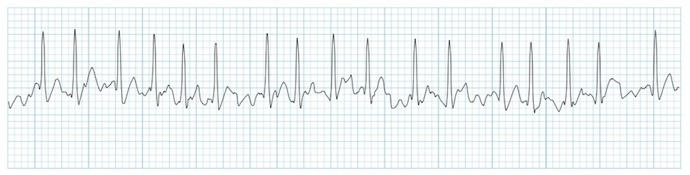

Basic Regular Rhythms
Normal Sinus Rhythm
Regular, normal P wave, constant PR interval. HR:60-100bpm

Sinus Brady
Regular, normal P wave, constant PR interval. HR < 60bpm
Sinus Tachy
Regular, normal P wave, constant PR interval. HR > 100bpm
Atrial Flutter
Mostly regular(can be irregular), Narrow complex, with "saw-tooth" pattern flutter waves. Regular atrial activity at 300bpm. Variable A/V block, 2:1, 3:1, or 4:1 flutter wave to QRS ratio.

Basic Irregular Rhythms
Atrial Fibrillation
Basic Irregular Rhythms
The most common sustained arrhythmia. Irregular, NO P waves, Variable ventricular rate. Common ventricular rate of 110-160.

Sinus Arrhythmia
Irregular, variation in the P-P interval of more than 120 ms. Normal P waves, normal P-R interval.